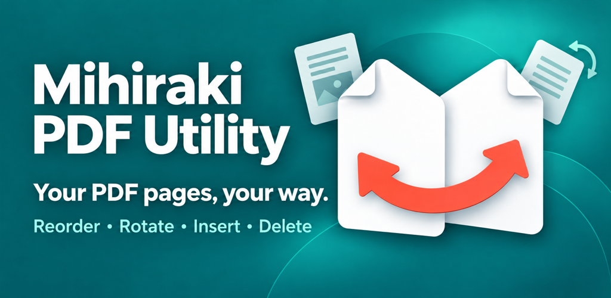

PDF 跨頁分割與合併工具
自由實現跨頁顯示、雙頁檢視、智能拆分與合併。100% 離線安全處理，專為 Android 設計的直觀 PDF 編輯工具。
自由實現跨頁顯示、雙頁檢視、智能拆分與合併。100% 離線安全處理，專為 Android 設計的直觀 PDF 編輯工具。
見開 PDF 實用工具是一款專為讀者和創作者設計的多功能工具。無論是整理掃描書籍、合併文件或重新排序頁面，直觀的操作讓您輕鬆完成編輯。

並排顯示兩頁。完美支援日式書籍和漫畫的「由右至左閱讀（RTL）」模式。

將雙頁跨頁拆分為單頁。支援垂直（左右）與水平（上下）拆分方向。

只需拖曳縮圖即可整理頁面順序。

輕鬆將多個 PDF 檔案合併為單一文件，或向現有 PDF 新增頁面。